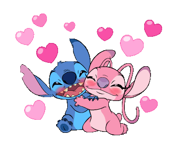
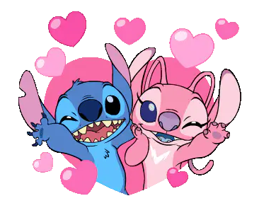
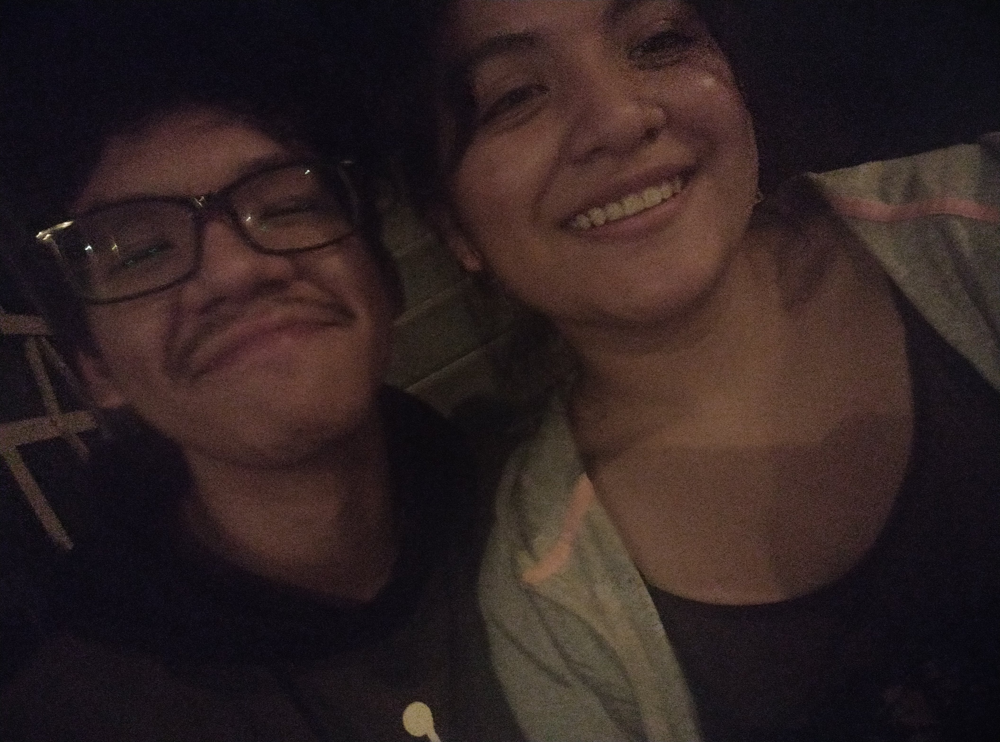
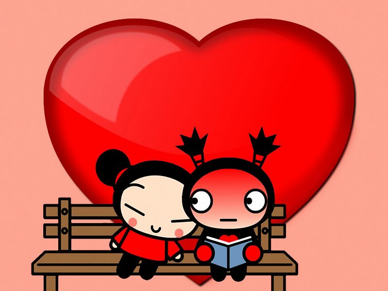
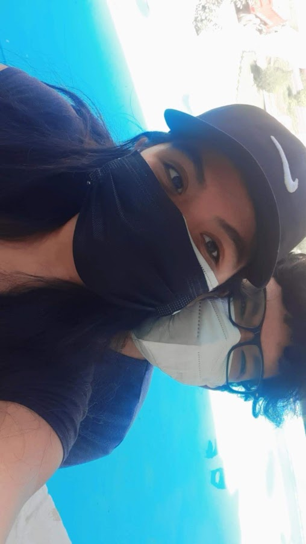
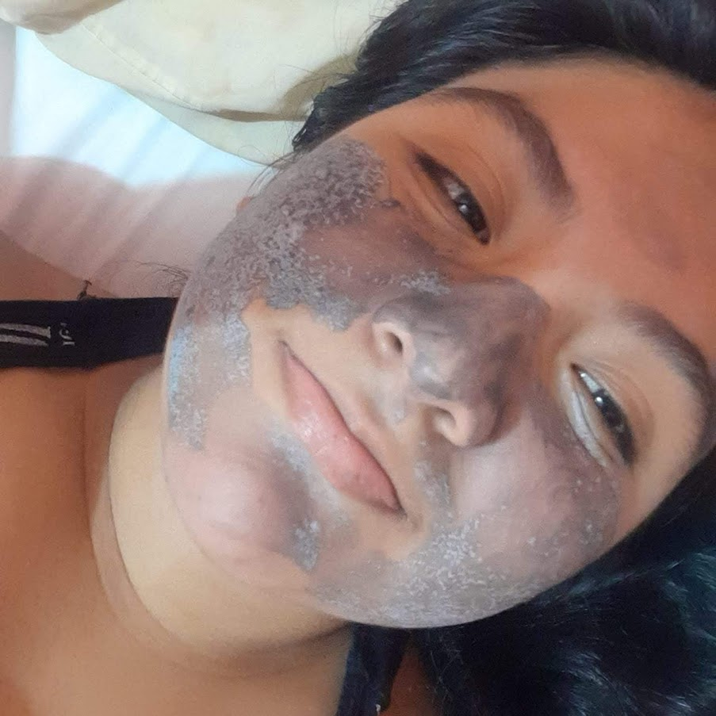
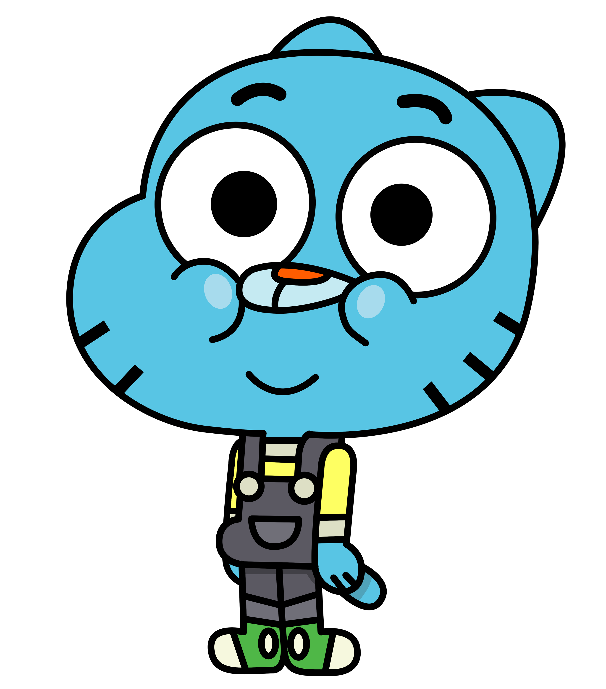
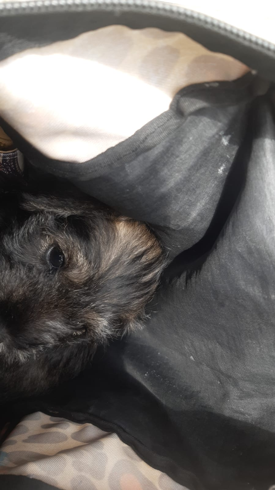
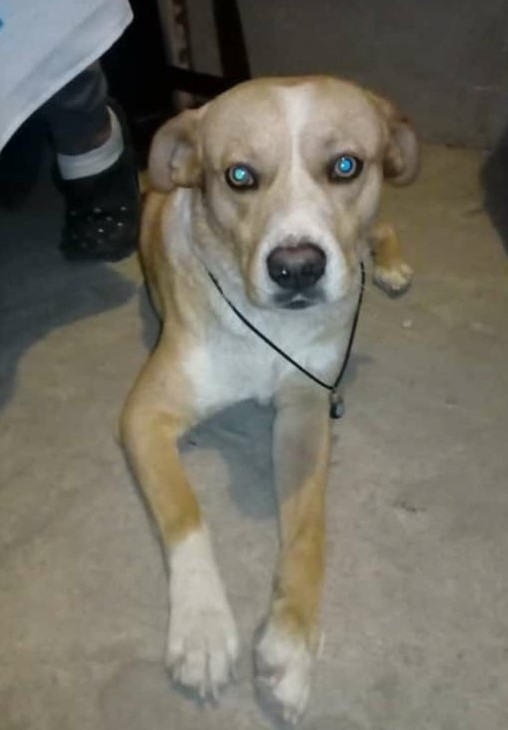
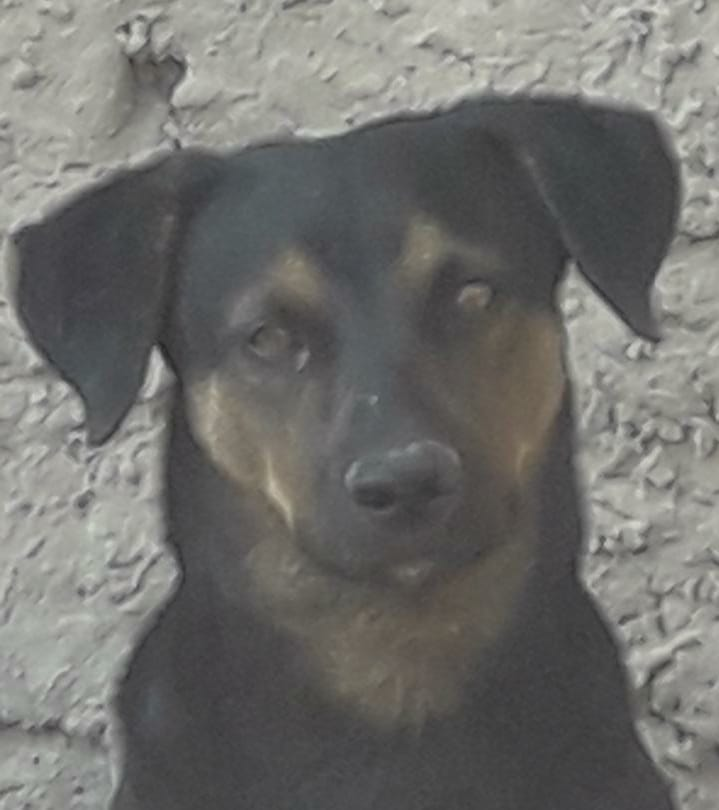

CASUALIDAD
1° AÑO
MEJORES MOMENTOS
VIAJES
MAITA

  
GERALDINE
Y
AXL
💘😊🍓 FELIZ 14 DE FEBRERO CHIQUITA HERMOSA FRESITA LINDA 🍓😊💘
GERALDINE CRISTINA
🌟Esta niñita hermosa nació el 04 de enero del 2003✨ en chosica, como la describiría a ella pues es una chiquita hermosa, alegre con una sonrisita que enamora 😍 y te hace mirar las estrellas 😍 es responsable cuando ella se lo propone además de ser muy trabajadora es una personita muy linda ya que siempre quiere tratar de ayudar a los demás y algo que cabe destacar muchisimo es su amor por los animalitos, ahora anda cursando la universidad y se convertirá en una Contadora, tiene muchas metas y sé que ella puede lograr TODO🌟

AXL FABIAN
🧊Este niñito loco nació el 10 de julio del 2003✨ en Lima, como me describiría pues desde antes de nacer he sido muy dormilón al punto de pasarme 8 días en la panza xd, soy torpe a veces jejjeje soy alegre y buena onda con personas que lo valgan no demuestro mi verdadera forma a cualquiera, reservado y me gusta pasar un poco desapercibido no llamar la atención tanto, después soy un iceberg pero alguien logró derretirme, ando cursando para ser Ingeniero de Sistemas, espero este año cumplir muchas cosas 🧊

🐶💖FRUTO DE NUESTRO AMOR TUVIMOS A ESTA PRINCESS HERMOSA💖🐶
MAITA
🌟PARA TENER A NUESTRA BEBÉ 🐶, INICIÓ DE UNA FORMA TAN INESPERADA LLENDO AL VETERINARIO POR EL GRAN DEXTER Y FUE AHÍ DONDE VIMOS A UNA SEÑORA CON CACHORRITOS Y NOS CONTÓ QUE TENÍA MÁS EN CASA Y RESULTABA QUE ESTABA VENDIENDO ES AHÍ DONDE MI AMORCITO PREGUNTA POR LA CACHORRITA Y DESPUÉS DE DÍAS TOMAMOS LA DECISIÓN DE TENER NUESTRA MASCOTITA 💖 QUE LLAMAMOS MAIA PERO LE DECIMOS MAITA JEJJEEJ, ELLA LLEGÓ EL 16 DE SEPTIEMBRE DE 2021 LO RECOGIÓ SU MAMI Y LA TRAJO EN UNA MOCHILITA XD AHÍ ESTÁ LA PRIMERA FOTITO DE ELLA, COSITA HERMOSA🌟

🐕😍ADEMÁS DE LA MAITA TAMBIÉN EN NUESTRA FAMILY TENEMOS AL GRAN DEX😍🐕
DEXTER
😎EL GRAN DEXTER, QUE TIENE SU REPUTACIÓN EN LAS CALLES LIDER DE UNA MAFIA 🔫 QUE HASTA INCLUSO TIENE SUS MARCAS DE GUERRA COMO EL RASPÓN DE LA NARIZ😈 XD, LO CONSIDERO COMO HIJO YA QUE ES EL PRIMER HIJO DE SU MAMI SI NO ME EQUIVOCO Y QUE LO ADOPTO DE UNA VECINA QUE AYUDA ANIMALITOS, ELLA AL VERLO FUE ENAMORARSE DE EL A PRIMERA VISTA ASÍ QUE DECIDIÓ LLEVARSELO A SU CASI Y MOVIO MAR CIELO Y TIERRA PARA QUE PUDIERA QUEDARSELO, Y SU MAMI DA LO MEJOR DE ELLA PARA PODER CONSENTIR A SU OTRO BEBE QUE ES EL, COMO SU APODO EL GRAN DEX😎

💫🐶NO TUVE LA OPORTUNIDAD DE CONOCERLO PERO SU MAMI LO ADORABA CON TODO EL CORAZÓN🐶💫
HULCK
✨COMO MENCIONE EN EL TITULO NO PUDE CONOCERLO PERO DE LO QUE ESTOY SEGURO ES QUE DEBIO SER UN PERRITO BIEN TIERNO, LINDO SU MAMI ME CONTO MUCHO DE EL Y ME MOSTRO VARIAS FOTOS DE EL CON DEXTER CUANDO ERAN PEQUES, LO AGREGO ACA PORQUE SE LO MUCHO QUE LO ADORABAS MI AMORCITO Y HICISTE TODO LO POSIBLE EN ENCONTRARLO, YO SÉ QUE DEBE DE ESTAR BIEN EN DONDE SE ENCUENTRE Y SABE LO MUCHO QUE LO AMASTE✨
